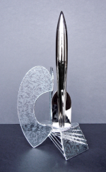

Presented at: Chicon 7, Chicago, Illinois, August 30-September 3, 2012
Toastmaster: John Scalzi
Base design: Deb Kosiba
Awards Administration: Diane Lacey, Jeff Orth, David Gallaher, John Platt, Helen Montgomery
Best Novel
- Among Others, Jo Walton (Tor)
- Embassytown, China Miéville (Macmillan / Del Rey)
- Leviathan Wakes, James S. A. Corey (Orbit)
- Deadline, Mira Grant (Orbit)
- A Dance With Dragons, George R. R. Martin (Bantam Spectra)
Best Novella
- “The Man Who Bridged the Mist”, Kij Johnson (Asimov’s)
- “Kiss Me Twice”, Mary Robinette Kowal (Asimov’s)
- Silently and Very Fast, Catherynne M. Valente (WSFA)
- “The Man Who Ended History: A Documentary”, Ken Liu (Panverse 3)
- Countdown, Mira Grant (Orbit)
- “The Ice Owl”, Carolyn Ives Gilman (The Magazine of Fantasy & Science Fiction)
Note: 6 nominees due to tie for final position.
Best Novelette
- “Six Months, Three Days”, Charlie Jane Anders (Tor.com)
- “Ray of Light”, Brad R. Torgersen (Analog)
- “The Copenhagen Interpretation”, Paul Cornell (Asimov’s)
- “What We Found”, Geoff Ryman (The Magazine of Fantasy and Science Fiction)
- “Fields of Gold”, Rachel Swirsky (Eclipse Four)
Best Short Story
- “The Paper Menagerie”, Ken Liu (The Magazine of Fantasy and Science Fiction)
- “The Cartographer Wasps and the Anarchist Bees”, E. Lily Yu (Clarkesworld)
- “The Homecoming”, Mike Resnick (Asimov’s)
- “Movement”, Nancy Fulda (Asimov’s)
- “Shadow War of the Night Dragons: Book One: The Dead City: Prologue”, John Scalzi (Tor.com)
Best Related Work
- The Encyclopedia of Science Fiction, Third Edition, edited by John Clute, David Langford, Peter Nicholls, and Graham Sleight (Gollancz)
- The Steampunk Bible: An Illustrated Guide to the World of Imaginary Airships, Corsets and Goggles, Mad Scientists, and Strange Literature, Jeff VanderMeer and S. J. Chambers (Abrams Image)
- Wicked Girls (CD), Seanan McGuire
- Writing Excuses, Season 6 (podcast series), Brandon Sanderson, Dan Wells, Howard Tayler, Mary Robinette Kowal, and Jordan Sanderson
- Jar Jar Binks Must Die…and other Observations about Science Fiction Movies, Daniel M. Kimmel (Fantastic Books)
Best Graphic Story
- Digger, by Ursula Vernon (Sofawolf Press)
- Fables Vol 15: Rose Red, by Bill Willingham and Mark Buckingham (Vertigo)
- Locke & Key Volume 4: Keys To The Kingdom, written by Joe Hill, illustrated by Gabriel Rodriguez (IDW)
- Schlock Mercenary: Force Multiplication, written and illustrated by Howard Tayler, colors by Travis Walton (The Tayler Corporation)
- The Unwritten (Volume 4): Leviathan, created by Mike Carey and Peter Gross, written by Mike Carey, illustrated by Peter Gross (Vertigo)
Best Dramatic Presentation, Long Form
- Game of Thrones (Season 1), created by David Benioff and D. B. Weiss;
written by David Benioff, D. B. Weiss, Bryan Cogman, Jane Espenson, and George R. R. Martin; directed by Brian Kirk, Daniel Minahan, Tim van Patten, and Alan Taylor (HBO) - Hugo, screenplay by John Logan; directed by Martin Scorsese (Paramount)
- Captain America: The First Avenger, screenplay by Christopher Markus and Stephan McFeely; directed by Joe Johnston (Marvel)
- Harry Potter and the Deathly Hallows Part 2, screenplay by Steve Kloves; directed by David Yates (Warner Bros.)
- Source Code, screenplay by Ben Ripley; directed by Duncan Jones (Vendome Pictures)
Best Dramatic Presentation, Short Form
- Doctor Who, ”The Doctor’s Wife”, written by Neil Gaiman; directed by Richard Clark (BBC Wales)
- Doctor Who, ”The Girl Who Waited”, written by Tom MacRae; directed by Nick Hurran (BBC Wales)
- Doctor Who, ”A Good Man Goes to War”, written by Steven Moffat; directed by Peter Hoar (BBC Wales)
- Community, ”Remedial Chaos Theory”, written by Dan Harmon and Chris McKenna; directed by Jeff Melman (NBC)
- “The Drink Tank’s Hugo Acceptance Speech”, Christopher J Garcia and James Bacon (Renovation)
Best Editor, Short Form
- Sheila Williams
- John Joseph Adams
- Jonathan Strahan
- Neil Clarke
- Stanley Schmidt
Best Editor, Long Form
- Betsy Wollheim
- Patrick Nielsen Hayden
- Lou Anders
- Liz Gorinsky
- Anne Lesley Groell
Best Professional Artist
- John Picacio
- Stephan Martiniere
- Bob Eggleton
- Dan dos Santos
- Michael Komarck
Best Semiprozine
- Locus, edited by Liza Groen Trombi, Kirsten Gong-Wong, et al.
- Apex Magazine, edited by Catherynne M. Valente, Lynne M. Thomas, and Jason Sizemore
- Lightspeed, edited by John Joseph Adams
- Interzone, edited by Andy Cox
- New York Review of Science Fiction, edited by David G. Hartwell, Kevin J. Maroney, Kris Dikeman, and Avram Grumer
Best Fanzine
- SF Signal, edited by John DeNardo
- The Drink Tank, edited by James Bacon and Christopher J Garcia
- File 770, edited by Mike Glyer
- Banana Wings, edited by Claire Brialey and Mark Plummer
- Journey Planet, edited by James Bacon, Christopher J Garcia, et al.
Best Fan Writer
- Jim C. Hines
- Steven H Silver
- Claire Brialey
- Christopher J. Garcia
- James Bacon
Note: Hines, in his acceptance speech, recused himself permanently from future consideration in this category.
Best Fan Artist
- Maurine Starkey
- Steve Stiles
- Randall Munroe
- Spring Schoenhuth
- Brad W. Foster
- Taral Wayne
Note: 6 nominees due to tie for final position.
Best Fancast
- SF Squeecast, Lynne M. Thomas, Seanan McGuire, Paul Cornell, Elizabeth Bear, and Catherynne M. Valente
- SF Signal Podcast, John DeNardo and JP Frantz (presenters), Patrick Hester (producer)
- StarShipSofa, Tony C. Smith
- The Coode Street Podcast, Jonathan Strahan & Gary K. Wolfe
- Galactic Suburbia Podcast, Alisa Krasnostein, Alex Pierce, and Tansy Rayner Roberts (presenters) and Andrew Finch (producer)
The John W. Campbell Award for Best New Writer
- E. Lily Yu*
- Brad R. Torgersen*
- Karen Lord*
- Mur Lafferty
- Stina Leicht
*Finalists in their 2nd year of eligibility.
1,101 valid nominating ballots were received.
1,922 valid final ballots were cast.
For the full breakdown of voting and nomination see here (PDF).
UStream video coverage of the 2012 Hugo Awards Ceremony
Replay of CoverItLive text-based coverage of 2012 Hugo Awards Ceremony
Pingback: Nominee Time | Cheryl's Mewsings
Pingback: 2012 Hugo Award Nominations Announced | Everett Renshaw
Pingback: 2012 Hugo Award Nominees Announced - Fake Geeks. » Fake Geeks.
Pingback: » Saturday Shorts: The 2012 Hugo Nominees The Hopeful Librarian
Pingback: 2012 Hugo Nominations | Adam Israel
Pingback: Hugo Awards! « Isotropica
Pingback: Hugo Nominees! « K.T. Bryski
Pingback: E os indicados para o Hugo Awards 2012 são…
Pingback: John Picacio nominated for 2012 Hugo Award | Geek Speak | a mySA.com blog
Pingback: John Picacio nominated for 2012 Hugo Award | San Antonio Local Me.me
Pingback: Hugo Award Nominations | Beamer Books
Pingback: 2012 雨果獎入圍名單公布 | Way of Luminosity
Pingback: 2012 Hugo Awards Announced! « Strange Telemetry
Pingback: CALENDAR SCHEDULE » John Picacio nominated for 2012 Hugo Award » CALENDAR SCHEDULE
Pingback: В поисках “Хьюго”-2012 – начало « OLeg89. Мнения
Pingback: The Wife vs The Girl vs A Good Man | Doctor Who TV
Pingback: ADWD en GoT genomineerd voor Hugo Awards | Winter Is Coming
Pingback: Hugo nominees 2012 | UTSIKT FRÅ LIA ~ VIEW FROM THE HILLSIDE
Pingback: Doctor Who: Radio Free Skaro » Blog Archive » Radio Free Skaro #305 – Richard Clark’s New New York’s Rockin’ Eve
Pingback: CALENDAR » John Picacio nominated for 2012 Hugo Award » CALENDAR
Pingback: A Big Cheer And A Few Reflections on the Hugos « John H. Stevens: Writer, Erudite Ogre
Pingback: Women in SF&F Month: Week Two Guests | Fantasy Cafe | Reviews of Fantasy and Science Fiction Books
Pingback: Play it cool Sizemore… the Hugo Award… « A Writer's Vanity
Pingback: Handicapping this year’s Hugo Awards « The Website at the End of the Universe
Pingback: John Picacio nominated for 2012 Hugo Award | News for Today
Pingback: Silently and Very Fast Nominated For Hugo Award
Pingback: Finalists: 2012 Hugo Awards « Del Rey and Spectra - Science Fiction and Fantasy Books, Graphic Novels, and More
Pingback: Hugo Noms… » The Hysterical Hamster
Pingback: 2012 Hugo Award Nominees Announced | Streaming Media Hosting
Pingback: 2012 Hugo Award Nominees Announced | Teresa's Little Paws
Pingback: 2012 Hugo Award Nominees Announced | InTyNews
Pingback: 2012 Hugo Award Nominees Announced | Web Hosting Blog
Pingback: 2012 Hugo Award Nominees Announced | Tech Hyppo
Pingback: Congratulations to all of the Hugo nominees! : Jamie Todd Rubin
Pingback: H is for Hugo | Story Treasury
Pingback: Doctor Who Lands 3 HUGO Nominations – OMG! Daleks!
Pingback: Nominees announced for 2012 Hugo Awards | Robot 6 @ Comic Book Resources – Covering Comic Book News and Entertainment
Pingback: This Year’s Hugo Award Noms Include Doctor Who, Game of Thrones…and Community?!
Pingback: Locke & Key: Gabriel Rodríguez y Joe Hill nominados a los prestigiosos Premios Hugo | Los Eternautas
Pingback: Renewed Zeal | Inspiration Struck
Pingback: 2012 Hugo Nominations Bring Surprises and Shocks
Pingback: Fleen: Home Of The Webcomics Action News Team! » Happy Bradmas
Pingback: Monday News: Awards Season « Planned Banter
Pingback: The Hugo Awards 2012 Nominees
Pingback: Congratulations to the Hugo Award Nominees! at Night Shade Books
Pingback: Inkhaven » Blog Archive » FogCon, stories, Hugos, and houses
Pingback: The Road to Worldcon | Fuddster Dot Com
Pingback: Nerd Nightly News - TDW Geeks
Pingback: Reactions to the 2012 Hugo Shortlist: Continuing Chronicles of the Hugo-Snatcher « Culturally Disoriented
Pingback: Sputnik: Community y Doctor Who, nominados a los Hugo de este año | SPK.LA